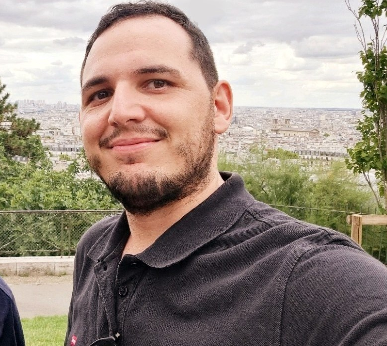

 |
Dr. Antonio Macaluso Senior Researcher Intelligent Information Systems (I2S) German Research Center for Artificial Intelligence (DFKI) Agents and Simulated Reality Department Stuhlsatzenhausweg 3, Saarland Informatics Campus D3.2 66123 Saarbruecken, Germany Phone: +49 681 85775 5242, E-Mail: antonio.macaluso@dfki.de |
|
|
|
|
|
|
Summary
I hold the position of Senior Researcher at the German Research Center for Artificial Intelligence (DFKI), where I lead the Quantum Artificial Intelligence research line within the Intelligent Information Systems (I2S) research team. My primary research objective revolves around exploring the feasibility and potential benefits inherent in applying quantum algorithms to various domains within Artificial Intelligence. Specifically, my focus areas encompass supervised learning, reinforcement learning, multi-agent systems, as well as planning and scheduling. In addition to my research endeavors, I possess extensive practical experience spanning multiple years, during which I've effectively employed machine learning techniques to address industrial challenges.
Research
Selected Publications
Macaluso, Antonio; Klusch, Matthias; Lodi, Stefano; Sartori, Claudio. "MAQA: a quantum framework for supervised learning." Quantum Information Processing 22.3 (2023): 159. (Paper)
Supreeth Mysore Venkatesh, Antonio Macaluso, Matthias Klusch. "GCS-Q: Quantum graph coalition structure generation." International Conference on Computational Science. Springer, Cham, 2023. (Paper)
Venkatesh, Supreeth Mysore, Antonio Macaluso, and Matthias Klusch. "QuACS: Variational Quantum Algorithm for Coalition Structure Generation in Induced Subgraph Games." Proceedings of the 20th ACM International Conference on Computing Frontiers. 2023. (Paper, Arxiv)
Inajetovic, Matteo Antonio; Orazi, Filippo; Macaluso, Antonio; Lodi, Stefano; Sartori, Claudio. "Enabling Non-linear Quantum Operations Through Variational Quantum Splines." International Conference on Computational Science. Springer, Cham, 2023. (Paper)
Macaluso, Antonio; Orazi, Filippo; Klusch, Matthias; Lodi, Stefano; Sartori, Claudio. "A Variational Algorithm for Quantum Single Layer Perceptron." Proceedings 8th International Conference on Machine Learning, Optimization, and Data Science (LOD); LNCS Springer. 2022. (Paper , pdf, Code)
Venkatesh, Supreeth Mysore, Antonio Macaluso, and Matthias Klusch. "BILP-Q: quantum coalition structure generation." Proceedings of the 19th ACM International Conference on Computing Frontiers. 2022. (Paper, Arxiv, Code)
Parmiggiani, N., et al. "A Deep Learning Method for AGILE-GRID Gamma-Ray Burst Detection." The Astrophysical Journal 914.1 (2021): 67. (Paper)
Ñanculef, Ricardo, et al. "Self-supervised Bernoulli autoencoders for semi-supervised hashing." Iberoamerican Congress on Pattern Recognition. Springer, Cham, 2021. (Paper, Arxiv, Code)
Macaluso, Antonio. "A Novel Framework for Quantum Machine Learning." (2021). (PhD Thesis)
Macaluso, Antonio, et al. "A variational algorithm for quantum neural networks." International Conference on Computational Science. Springer, Cham, 2020. (Paper, Code)
Macaluso, Antonio, et al. "Quantum splines for non-linear approximations." Proceedings of the 17th ACM International Conference on Computing Frontiers. 2020. (Paper, Code)
Macaluso, Antonio, et al. "Quantum Ensemble for Classification." arXiv preprint arXiv:2007.01028 (2020). (Arxiv)
Macaluso, Antonio, Stefano Lodi, and Claudio Sartori. "Quantum Algorithm for Ensemble Learning." ICTCS. 2020. (Paper, Code)
Current Projects
QAICO - Quantum Artificial Intelligence for Coordination and Cooperation (BMBF, 4/2021 - 3/2024; Part of Joint Project QAI2 Quantum AI for Automotive Industry)
Education
2021 - PhD in Computer Science and Engineering, University of Bologna (PhD Thesis)
2017 - Master's degree in Statistical Sciences, University of Bologna
2016 - Master in Data Science, Bologna Business School - University of Bologna
2014 - Bachelor's degree in Statistical Sciences, University of Bologna
Teaching
(2023/2024) Lecturer - Quantum Artificial Intelligence, WS 2023/2024, U Saarland, Germany (with M Klusch)
(2023) Lecturer - Quantum Computing for NP-hard problems and Artificial Intelligence, University of Bologna, Italy (Syllabus , Courses webpage)
(2022/2023) Lecturer - Quantum Artificial Intelligence, WS 2022/2023, U Saarland, Germany (with M Klusch)
(2022) Lecturer - CS Seminar 136315, Quantum Machine Learning, SS 2022, U Saarland, Germany (with M Klusch)
(2021) Lecturer - Quantum Computing, Deep Learning Italia (DLI), Italy
(2019) Teaching Assistant - Machine Learning Systems for Data Science, School of Economics, Management and Statistics, University of Bologna, Italy
(2018) Teaching Assistant - System and Algorithms for Data Science, School of Economics, Management and Statistics, University of Bologna, Italy
(2017) Lecturer - Machine Learning and Parallel Computing with R, Summer School on Parallel Computing, Cineca, Italy
(2016) Lecturer - School on Scientific Data Analytics and Visualization, Cineca, Italy
Supervision/Co-Supervision of Master's Theses
Venkatesh, S.M. On Quantum Coalition Structure Generation. Saarland University, CS Department, Saarbrücken, Germany, 2022
Matteo Antonio Inajetovic. Variational Quantum Splines: Moving Beyond Linearity for Quantum Activation Functions. Master's Degree in Artificial Intelligence, University of Bologna, 2022
Filippo Orazi. Quantum machine learning: development and evaluation of the Multiple Aggregator Quantum Algorithm. Master's Degree in Artificial Intelligence, University of Bologna, 2022
Nicolò Cangini. Quantum Supervised Learning: Algorithms and Implementation. Master's Degree in Computing Engineering, University of Bologna, 2019